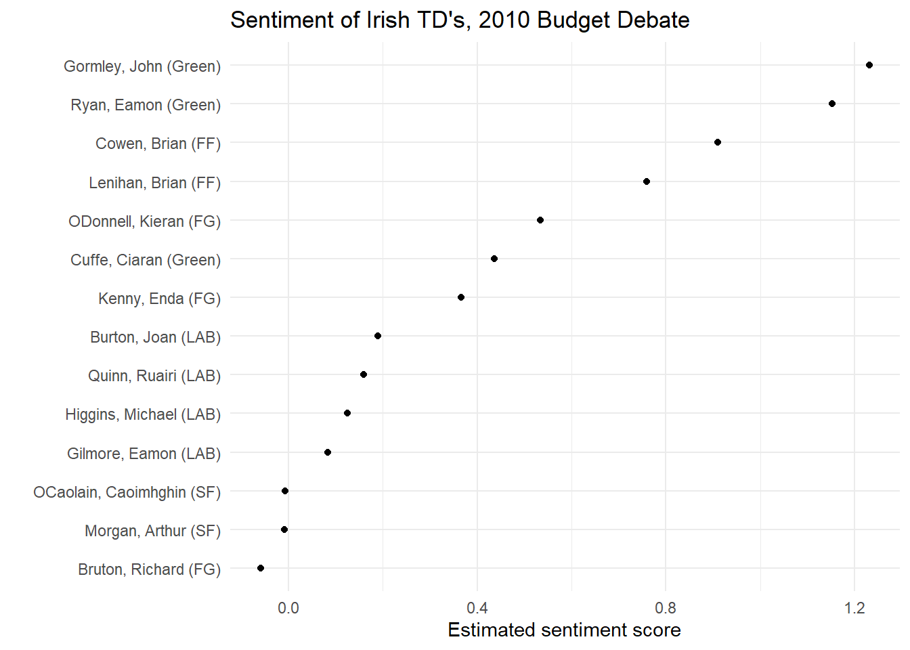
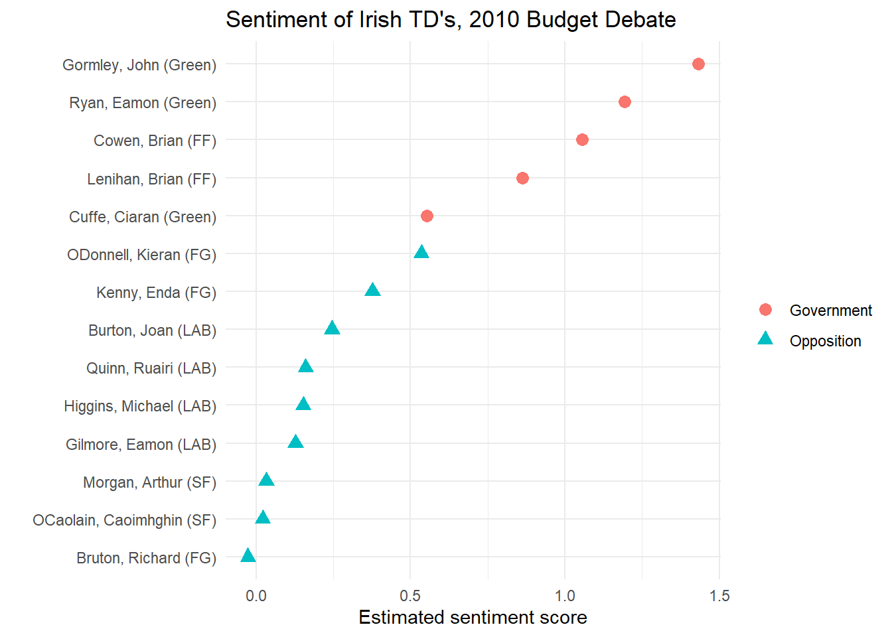
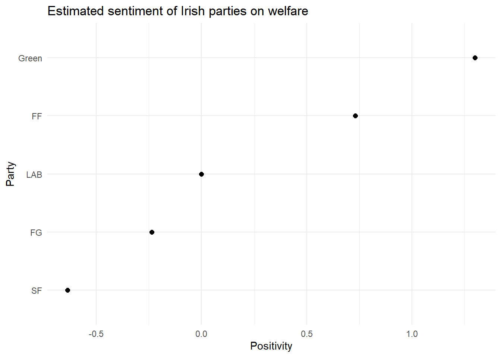

── Attaching core tidyverse packages ──────────────────────── tidyverse 2.0.0 ──
✔ dplyr 1.2.1 ✔ readr 2.2.0
✔ forcats 1.0.1 ✔ stringr 1.6.0
✔ ggplot2 4.0.3 ✔ tibble 3.3.1
✔ lubridate 1.9.5 ✔ tidyr 1.3.2
✔ purrr 1.2.2
── Conflicts ────────────────────────────────────────── tidyverse_conflicts() ──
✖ dplyr::filter() masks stats::filter()
✖ dplyr::lag() masks stats::lag()
ℹ Use the conflicted package (<http://conflicted.r-lib.org/>) to force all conflicts to become errors
Package version: 4.5.1
Unicode version: 15.1
ICU version: 74.1
Parallel computing: 28 of 28 threads used.
See https://quanteda.io for tutorials and examples.Example Code Session 5: Sentiment Analysis
We will briefly go over the basics for sentiment analysis again and take a look at how we can check the words driving a result, and talk at slightly more length about targeted sentiment analysis. We will use a slightly different example text corpus here: data_corpus_irishbudget2010. This corpus consists of 14 speeches from the 2010 budget debate in the Irish parliament, and comes with the quanteda.textmodels package.
Basic sentiment analysis
In order to use a sentiment dictionary, we need to load and tokenize the corpus again, as we did last time. We will also remove stopwords once again, and put the words to lowercase.
corp_ire <- data_corpus_irishbudget2010
toks_ire <- tokens(corp_ire,
remove_punct = T) |>
tokens_remove(stopwords("en")) |>
tokens_tolower()Let’s apply the Lexicoder Sentiment Dictionary (LSD, see Soroka & Young 2012) and group by party:
sent_ire <- tokens_lookup(toks_ire,
dictionary = data_dictionary_LSD2015) |>
dfm() |>
convert(to = "data.frame")
sent_ire doc_id negative positive neg_positive neg_negative
1 Lenihan, Brian (FF) 185 396 0 0
2 Bruton, Richard (FG) 157 148 0 0
3 Burton, Joan (LAB) 220 266 0 0
4 Morgan, Arthur (SF) 250 248 0 0
5 Cowen, Brian (FF) 147 366 0 0
6 Kenny, Enda (FG) 101 146 0 0
7 ODonnell, Kieran (FG) 49 84 0 0
8 Gilmore, Eamon (LAB) 161 175 0 0
9 Higgins, Michael (LAB) 37 42 0 0
10 Quinn, Ruairi (LAB) 34 40 0 0
11 Gormley, John (Green) 16 56 0 0
12 Ryan, Eamon (Green) 24 77 0 0
13 Cuffe, Ciaran (Green) 36 56 0 0
14 OCaolain, Caoimhghin (SF) 146 145 0 0Let’s apply the log odds formula we discussed in class, and then plot overall sentiment. Two quick pointers:
- We are omitting the negation columns (neg_negative and neg_positive) since the df we just created showed that there are no mentions of those anyway. Normally, you should include them!
- You are probably not familiar with the
fct_reorder()command in the ggplot call. This is a useful command that re-orders a factor (check the R documentation for more info what a factor is) by the corresponding values of the variable provided - for example in our code,fct_reorder(doc_id, positivity)rearranges doc_id according to the value of positivity.
sent_ire <- mutate(sent_ire,
positivity = log((positive + .5) / (negative + .5))
)
ggplot(sent_ire) +
geom_point(aes(
x = positivity,
y = fct_reorder(doc_id, positivity)
)) +
labs(title = "Sentiment of Irish TD's, 2010 Budget Debate",
x = "Estimated sentiment score",
y = "") +
theme_minimal()
This is interesting - but what does that tell us? Who are these people? In 2010, the Irish government was a coalition of centre-right party Fianna Fáil (FF) and the Greens (Green). Let’s use the document variables to check for the difference of government and opposition. For this, we need to actually access the document variables. There are two ways to do so. One is to use the $ operator (remember the syntax from the first session: dataframe$variable) to directly access columns. To do so, always pay attention that you actually use the correct
# Creating a government-opposition variable:
toks_ire$gov_status <- if_else(toks_ire$party %in% c("FF", "Green"),
"Government",
"Opposition")
# Let's check results:
docvars(toks_ire) year debate number foren name party gov_status
1 2010 BUDGET 01 Brian Lenihan FF Government
2 2010 BUDGET 02 Richard Bruton FG Opposition
3 2010 BUDGET 03 Joan Burton LAB Opposition
4 2010 BUDGET 04 Arthur Morgan SF Opposition
5 2010 BUDGET 05 Brian Cowen FF Government
6 2010 BUDGET 06 Enda Kenny FG Opposition
7 2010 BUDGET 07 Kieran ODonnell FG Opposition
8 2010 BUDGET 08 Eamon Gilmore LAB Opposition
9 2010 BUDGET 09 Michael Higgins LAB Opposition
10 2010 BUDGET 10 Ruairi Quinn LAB Opposition
11 2010 BUDGET 11 John Gormley Green Government
12 2010 BUDGET 12 Eamon Ryan Green Government
13 2010 BUDGET 13 Ciaran Cuffe Green Government
14 2010 BUDGET 14 Caoimhghin OCaolain SF Opposition# Merge over and check:
sent_ire$gov_status <- toks_ire$gov_status
sent_ire doc_id negative positive neg_positive neg_negative
1 Lenihan, Brian (FF) 185 396 0 0
2 Bruton, Richard (FG) 157 148 0 0
3 Burton, Joan (LAB) 220 266 0 0
4 Morgan, Arthur (SF) 250 248 0 0
5 Cowen, Brian (FF) 147 366 0 0
6 Kenny, Enda (FG) 101 146 0 0
7 ODonnell, Kieran (FG) 49 84 0 0
8 Gilmore, Eamon (LAB) 161 175 0 0
9 Higgins, Michael (LAB) 37 42 0 0
10 Quinn, Ruairi (LAB) 34 40 0 0
11 Gormley, John (Green) 16 56 0 0
12 Ryan, Eamon (Green) 24 77 0 0
13 Cuffe, Ciaran (Green) 36 56 0 0
14 OCaolain, Caoimhghin (SF) 146 145 0 0
positivity gov_status
1 0.759621159 Government
2 -0.058840500 Opposition
3 0.189476549 Opposition
4 -0.008016075 Opposition
5 0.910170346 Government
6 0.366966630 Opposition
7 0.534778865 Opposition
8 0.083133900 Opposition
9 0.125163143 Opposition
10 0.160342650 Opposition
11 1.230880257 Government
12 1.151604819 Government
13 0.436928378 Government
14 -0.006849342 Opposition# Redo plot with government status in there:
ggplot(sent_ire) +
geom_point(aes(
x = positivity,
y = fct_reorder(doc_id, positivity),
col = gov_status,
shape = gov_status
),
size = 3) + #lets make the points a bit bigger to see the shapes better
labs(title = "Sentiment of Irish TD's, 2010 Budget Debate",
x = "Estimated sentiment score",
y = "",
col = "",
shape = "") +
theme_minimal()Diagnostics
So far, we just took the dictionary for granted. But we can actually check which are the most common positive and negative words with the tokens_keep() function. This is useful to check what drives the results.
# Check top 25 positive tokens
toks_ire |>
tokens_keep(pattern = data_dictionary_LSD2015$positive) |>
dfm() |>
topfeatures(n = 25) benefit support recovery fair create confidence
68 52 44 41 39 37
provide well credit help care hope
36 33 31 29 28 27
good contribution better fairness like opportunity
26 26 26 25 24 23
protect providing sustainable forward ensure efficiency
22 21 20 20 19 19
vision
19 # Check top 25 negative tokens
toks_ire |>
tokens_keep(pattern = data_dictionary_LSD2015$negative) |>
dfm() |>
topfeatures(n = 25) ireland crisis deficit debt difficult problems
79 47 38 25 22 21
worst problem cutting failed vulnerable poverty
21 21 20 19 18 18
hard burden lost poor affected pain
17 15 15 15 14 14
opposition wrong lose lack difficulties collapse
12 12 10 10 9 9
challenge
9 Huh - “Ireland” is a negative token? That’s not ideal for our case here… We can fix this by changing the word “Ireland” in the tokens to something else. Since we drop all tokens that don’t show up in the dictionary anyway, it doesn’t matter that we lose that information. We replace it with a placeholder called “DONTSCORE” and re-run the analysis, using tokens_replace(). The star in “pattern” is a wildcard character that captures anything following “ireland” - it makes it so that we also replace mentions such as “Ireland’s”.
# Replacing "ireland":
toks_ire_cleaned <- toks_ire |>
tokens_replace(pattern = "ireland*",
replacement = "DONTSCORE")
# Redoing analysis and plot
sent_ire_clean <- tokens_lookup(toks_ire_cleaned,
dictionary = data_dictionary_LSD2015) |>
dfm() |>
convert(to = "data.frame") |>
mutate(positivity = log((positive + .5) / (negative + .5)))
sent_ire_clean$gov_status <- toks_ire$gov_status
ggplot(sent_ire_clean) +
geom_point(aes(
x = positivity,
y = fct_reorder(doc_id, positivity),
col = gov_status,
shape = gov_status
),
size = 3) + #lets make the points a bit bigger to see the shapes better
labs(title = "Sentiment of Irish TD's, 2010 Budget Debate",
x = "Estimated sentiment score",
y = "",
col = "",
shape = "") +
theme_minimal()
Targeted sentiment analysis
We can target our sentiment analysis around specific terms. Let’s check how these politicians speak about welfare. To do this, we first need to define some keywords related to welfare. In our case, we do this simple and just use the actual word “welfare”, but in a real targeted sentiment analysis, you might want to define additional keywords (e.g. you could use some terms like “social programs”, or the names of explicit welfare programs).
We choose a window of +/- 10 words around each mention of welfare here. You could choose a larger or smaller window - a good way to decide this is by either doing a close read of the data yourself and marking relevant windows, or using the kwic() command to check a specific window (or both!). We don’t print the output here for space reasons, but it does show up 100 times!
#first check whether the term occurs in the corpus, and in which context:
kwic(toks_ire,
pattern = "welfare",
window = 10)Keyword-in-context with 100 matches.
[Lenihan, Brian (FF), 337]
[Lenihan, Brian (FF), 494]
[Lenihan, Brian (FF), 949]
[Lenihan, Brian (FF), 1434]
[Lenihan, Brian (FF), 1457]
[Lenihan, Brian (FF), 1927]
[Lenihan, Brian (FF), 2111]
[Lenihan, Brian (FF), 2119]
[Lenihan, Brian (FF), 2178]
[Lenihan, Brian (FF), 2243]
[Lenihan, Brian (FF), 2265]
[Lenihan, Brian (FF), 2302]
[Lenihan, Brian (FF), 2359]
[Lenihan, Brian (FF), 2403]
[Lenihan, Brian (FF), 2438]
[Lenihan, Brian (FF), 2441]
[Lenihan, Brian (FF), 2453]
[Lenihan, Brian (FF), 2462]
[Lenihan, Brian (FF), 2482]
[Lenihan, Brian (FF), 4312]
[Bruton, Richard (FG), 150]
[Bruton, Richard (FG), 1167]
[Bruton, Richard (FG), 1181]
[Bruton, Richard (FG), 1196]
[Bruton, Richard (FG), 1200]
[Bruton, Richard (FG), 1235]
[Burton, Joan (LAB), 82]
[Burton, Joan (LAB), 329]
[Burton, Joan (LAB), 937]
[Burton, Joan (LAB), 953]
[Burton, Joan (LAB), 975]
[Burton, Joan (LAB), 1209]
[Burton, Joan (LAB), 1227]
[Burton, Joan (LAB), 1241]
[Burton, Joan (LAB), 1353]
[Burton, Joan (LAB), 2314]
[Burton, Joan (LAB), 2661]
[Morgan, Arthur (SF), 141]
[Morgan, Arthur (SF), 217]
[Morgan, Arthur (SF), 538]
[Morgan, Arthur (SF), 676]
[Morgan, Arthur (SF), 820]
[Morgan, Arthur (SF), 846]
[Morgan, Arthur (SF), 921]
[Morgan, Arthur (SF), 1335]
[Morgan, Arthur (SF), 1345]
[Morgan, Arthur (SF), 1375]
[Morgan, Arthur (SF), 1388]
[Morgan, Arthur (SF), 1395]
[Morgan, Arthur (SF), 1462]
[Morgan, Arthur (SF), 1484]
[Morgan, Arthur (SF), 1496]
[Morgan, Arthur (SF), 1503]
[Morgan, Arthur (SF), 1520]
[Morgan, Arthur (SF), 1535]
[Morgan, Arthur (SF), 1581]
[Morgan, Arthur (SF), 1594]
[Morgan, Arthur (SF), 1642]
[Morgan, Arthur (SF), 1666]
[Morgan, Arthur (SF), 1687]
[Morgan, Arthur (SF), 1710]
[Morgan, Arthur (SF), 2995]
[Cowen, Brian (FF), 724]
[Cowen, Brian (FF), 982]
[Cowen, Brian (FF), 1716]
[Cowen, Brian (FF), 2318]
[Cowen, Brian (FF), 2329]
[Cowen, Brian (FF), 2341]
[Cowen, Brian (FF), 2354]
[Cowen, Brian (FF), 2382]
[Cowen, Brian (FF), 2399]
[Cowen, Brian (FF), 2409]
[Cowen, Brian (FF), 2410]
[Cowen, Brian (FF), 2459]
[Cowen, Brian (FF), 2475]
[Cowen, Brian (FF), 2483]
[Cowen, Brian (FF), 2496]
[Cowen, Brian (FF), 2508]
[Cowen, Brian (FF), 2541]
[Cowen, Brian (FF), 2570]
[Kenny, Enda (FG), 596]
[Gilmore, Eamon (LAB), 342]
[Gilmore, Eamon (LAB), 1002]
[Gilmore, Eamon (LAB), 1428]
[Gilmore, Eamon (LAB), 1885]
[Gormley, John (Green), 57]
[Gormley, John (Green), 64]
[Gormley, John (Green), 344]
[Ryan, Eamon (Green), 309]
[OCaolain, Caoimhghin (SF), 85]
[OCaolain, Caoimhghin (SF), 109]
[OCaolain, Caoimhghin (SF), 165]
[OCaolain, Caoimhghin (SF), 169]
[OCaolain, Caoimhghin (SF), 180]
[OCaolain, Caoimhghin (SF), 258]
[OCaolain, Caoimhghin (SF), 322]
[OCaolain, Caoimhghin (SF), 494]
[OCaolain, Caoimhghin (SF), 789]
[OCaolain, Caoimhghin (SF), 1089]
[OCaolain, Caoimhghin (SF), 1821]
economy falling economic prices also cushion effects reduced pay social
also impacted public finances greatly reducing tax take increasing demand
look forward working colleagues government reform closer integration tax social
approximately € 2 billion 2009 given public service pay social
savings € 1 billion pay bill € 760 million social
5 13 gdp 2050 two thirds increase spending going social
problems ireland faces time make far-reaching reforms future adjustments social
adjustments social welfare government proud unrivalled record increasing level social
savings now can put risk extending beyond resources allow reduce
internationally particularly payments britain northern ireland know bitter experience 1980s
making following targeted changes new applicants rate job-seekers allowance supplementary
per week job offers activation measures refused making adjustments social
child benefit year cost € 2.5 billion 12 total social
month bringing rates € 150 € 187 per month respectively
compensated summary budget measures gives details number limited changes social
measures gives details number limited changes social welfare entitlements social
rose 2009 € 20.4 billion measures announced today reduce social
social welfare spending € 760 million 2010 despite reduction social
rise unemployment 2009 major adjustments announcing today across areas spending
engender confidence taken hard decisions fair preserved real value social
€ 45,000 public service expected take bigger cut ministers social
today see evidence mccarthy report set cuts achieved area social
breath people hoped reduced action report also looked areas social
rationalisation minister adopted none rationalisation worse adopted 42 savings social
rationalisation worse adopted 42 savings social welfare side 25 non-social
front line low-paid public servants pay first euro people social
helmsley school thought burden sharing like taxation little people social
budgets choices minister chose impose burden pain families children social
message christmas society st vincent de paul touch saying social
hear person genuinely touch ordinary families community say up-front social
soft options believes child benefit soft option believes recipients social
congregated low levels income minister dump winning formula advocate social
protect especially bottom benefit scale crisis precisely universal efficient social
recovery strategy acknowledged people treasury federal reserve united states social
budget indicates € 778 million € 4 billion cut social
spending power economy even immediately consumers spend less less cutting
strategy two faces one harsh discipline every citizens including social
months widows disabilities lost jobs businesses wish complicated government cut
child benefit young people threatened take part education training social
people witnessed government committing series con jobs ranging levies social
billion deficit government shown willing impoverish low-income families cuts social
decisions next year done nobody favours going easy targets budget
contribute get economy running high salaries contributed deficit payments social
parties wholeheartedly bought government's analysis economy provided proposals cutting social
circle high earning households taken harsh vicious measures cuts social
welfare fundamental principle divides sinn féin parties state see social
food level existence approaching budget much talk need reduce social
media commentators acted shamefully towards social provisions state talk social
state talk social welfare bill reference made possibility reducing social
204 week someone earning excess € 2,000 week problems social
government's watch area incompetent hands reached ruined however problems social
costing state extra money dealt rates payment cut cutting social
cut cutting social welfare payments detrimental effect economy society social
saved invested abroad spent rent mortgages food utilities essentials cutting
ultimately cause misery receiving end policy accept argument deflation favour
one side house addressed costs make lie argument people social
can afford live less already seen effects cuts made social
sector possibly increasing number job losses adding people onto social
power government shows just touch really proposal reduce rate social
undermines main focus economic recovery getting ireland back work social
want go back work government nothing deliver discriminating young adults
1980s suggestions immediate invested see return exchequer way saved social
capital programme housing costs reductions budget part general adjustment social
directly indirectly support approximately 80,000 jobs employment subsidy scheme social
jobs provide net benefit state terms tax revenue reduced social
framed difficult time irish families fully understand needs depend social
government done utmost protect vulnerable people society reductions many social
regrettable necessary part adjustment reason reducing payment rates ensure sustainable
continue protect vulnerable state insolvent support rely incomes reductions pay
year-on-year food 6 energy 11 clothing footwear 13 reduction social
payments people's pockets anything higher previously support provided irish state
welfare one best europe recent times record increases level social
one best europe recent times record increases level social welfare
level extent social support payments transformed beyond recognition given social
area found scale savings required public expenditure whole means savings
means savings welfare bill unavoidable important now can sustain strong
cut back slightly might drastic cuts future bearing mind increased
around 3 budget 2009 net reduction minus 1.1 brings social
made ensured viewed three year period spending power people received
lives rely children live dignity tax revenues 2003 levels left
vulnerable people carers disabled blind widows pensioners children protected area
benefit cut early childhood supplement abolished children whose families social
million fianna fáil made modest changes capital taxes instead cutting
analysis easy every person dole one fewer person supported social
take money blind government deputies return home weekend voting social
cut pay public sector workers nobody comes public life reduce
public life reduce welfare payments however given scale public pay
€ 76 million ring-fenced low income families fuel allowances social
say better us manage affairs taking hard decisions pay social
big push know sending top low paid workers families social
public service unions however revolt troop lobbies tomorrow support cuts
bear pain shame shame followers green party shame depend social
followers green party shame depend social welfare cut swathe social
benefit schemes assistance schemes jobseekers allowance farm assist pre-retirement supplementary
408 per annum carers association quite rightly pointed carers social
overriding objective budget strive fairness fairness fairness savage cuts social
young people future ireland future minister finance claims experience 1980s
meaning now pay every month medicines justify cuts pay social
question minister finance minister health children every deputy votes social
savings amounting € 7.623 billion protected low modest incomes social
| welfare |
| welfare |
| welfare |
| welfare |
| welfare |
| welfare |
| welfare |
| welfare |
| welfare |
| welfare |
| welfare |
| welfare |
| welfare |
| welfare |
| welfare |
| welfare |
| welfare |
| welfare |
| welfare |
| welfare |
| welfare |
| welfare |
| welfare |
| welfare |
| welfare |
| welfare |
| welfare |
| welfare |
| welfare |
| welfare |
| welfare |
| welfare |
| welfare |
| welfare |
| welfare |
| welfare |
| welfare |
| welfare |
| welfare |
| welfare |
| welfare |
| welfare |
| welfare |
| welfare |
| welfare |
| welfare |
| welfare |
| welfare |
| welfare |
| welfare |
| welfare |
| welfare |
| welfare |
| welfare |
| welfare |
| welfare |
| welfare |
| welfare |
| welfare |
| welfare |
| welfare |
| welfare |
| welfare |
| welfare |
| welfare |
| welfare |
| welfare |
| welfare |
| welfare |
| welfare |
| welfare |
| welfare |
| welfare |
| welfare |
| welfare |
| welfare |
| welfare |
| welfare |
| welfare |
| welfare |
| welfare |
| welfare |
| welfare |
| welfare |
| welfare |
| welfare |
| welfare |
| welfare |
| welfare |
| welfare |
| welfare |
| welfare |
| welfare |
| welfare |
| welfare |
| welfare |
| welfare |
| welfare |
| welfare |
| welfare |
payments effort demanded every citizen budget substantial last big push
payments two recent budgets sought address shortfall introducing highly progressive
system broadening tax base renewed programme government accepted recommendations commission
account one third day-to-day spending reductions two areas unavoidable measures
€ 980 million day-to-day spending programmes € 960 million savings
pensions remainder public service pensions cost increases scale ignored responsible
government proud unrivalled record increasing level social welfare payments past
payments past 12 years increased pension rates approximately 120 unemployment
rates april's supplementary budget signalled rates payment might reduced cost
system step labour costs rest economy can trap people protracted
allowance persons aged 20 21 years age dependent children reduced
rates recognised consumer prices declined rate groups older people experienced
spending hoped able introduce greater equity making child benefit taxable
dependent families fully compensated increasing qualified child allowance € 3.80
entitlements social welfare spending rose 2009 € 20.4 billion measures
spending rose 2009 € 20.4 billion measures announced today reduce
spending € 760 million 2010 despite reduction social welfare spending
spending reach € 21.1 billion next year due sharp rise
making smallest contribution result deductions rates payment revert 2006 levels
need protected older citizens reduced cost public services taken action
two children expected take bigger proportionate cut ministers deception still
shock sharp intake breath people hoped reduced action report also
considered efficiencies spending system rationalisation minister adopted none rationalisation worse
side 25 non-social welfare areas difficult area area required ministers
areas difficult area area required ministers apply bit imagination actually
66 years pay minister asked pony willing confront sort change
payments reduced € 8.30 per week carers widows widowers aged
aged 66 years stated burden sharing introduced taxation measures higher
ireland generous can cut yet hear person genuinely touch ordinary
ireland 2009 excessively generous cut minister deputy lenihan note budget
soft options minister choice thousands tax exiles ireland super-wealthy individuals
cuts back front instead cutting social benefits protect especially bottom
offers immense advantage recovery strategy acknowledged people treasury federal reserve
spending european economies unique stimulus package allows people bottom able
package approximately € 500 million cut education headings taking brunt
payments child benefit families less spend tax yields drop death
recipients public servants blank cheque transfer debts bankrupt developers taxpayer
income € 204 per week christmas bonus course complicated can
payments cut young people spent three four five years education
cuts april € 54 billion nama rip-off unfortunate taoiseach stay
deepen inequality ireland already one unequal states oecd cuts education
recipients low-income families half-hearted gestures pay cuts small number highest
recipients failure see delayed worsened inevitable essential develop fair taxation
public spending workers pay can expected fine gael given day
fundamental principle divides sinn féin parties state see social welfare
right luxury payment can cut depending economic climate families depend
bill government media commentators acted shamefully towards social provisions state
bill reference made possibility reducing social welfare spend keeping people
spend keeping people jobs creating new jobs instead focus rates
system definitely fraud ridiculously complicated administration involved system bureaucratic nightmare
end costing state extra money dealt rates payment cut cutting
payments detrimental effect economy society social welfare payments always returned
payments always returned economy weekly basis saved invested abroad spent
expenditure false economy one ultimately cause misery receiving end policy
cuts fall cost price index year includes mortgage interest number
low wages can afford live less already seen effects cuts
payments christmas loss christmas bonus double payment affected 1.3 million
queues grading rate job seeker's allowance age measures taken supplementary
€ 100 € 150 week 20 24 represents cut 25
bill reduced giving people opportunity want want lie homes scrounge
entitlements grossly unfair necessary frame realistic terms rather top-down budgeting
payments tax end next year raised money costed proposals propose
public service pay professional fees public spending capital allocations brought
system helping 73,000 people maintain part-time jobs casual work cost
€ 30 million € 100 million moreover provide significant net
government done utmost protect vulnerable people society reductions many social
payments regrettable necessary part adjustment reason reducing payment rates ensure
system can continue protect vulnerable state insolvent support rely incomes
payments must seen context falls prices cpi fell 6.6 12
payment rates less fall prices value payments people's pockets anything
one best europe recent times record increases level social welfare
welfare rates doubled since 2000 past 12 years increased pension
rates doubled since 2000 past 12 years increased pension rates
accounts one-third day-to-day spending reductions area found scale savings required
bill unavoidable important now can sustain strong welfare system future
system future cut back slightly might drastic cuts future bearing
rates around 3 budget 2009 net reduction minus 1.1 brings
back around 2008 levels however cost living come around 6
and-or child benefit remains broadly stable touched state pension older
rates 2008 levels cutting back spending still prioritising lowest incomes
available able work willing work provided challenges training opportunities jobs
christmas payment gone earnest lectures price statistics feed hungry child
payments people working age fianna fáil abolished property schemes instead
one person paying exchequer pre-budget statement labour identified adjustments totalling
bill tell constituents choice whip six deputies whip individual choice
payments however given scale public pay welfare spending option future
spending option future prosperity independence colleagues green party politics tell
increased next autumn 11 order ensure levy impact upon money
protect services integral equal society parent whose son daughter going
recipients carers young unemployed fianna fáil backbenchers last week staged
payments vulnerable sections society fianna fáil backbenchers must surely greatest
cut swathe social welfare benefit schemes assistance schemes jobseekers allowance
benefit schemes assistance schemes jobseekers allowance farm assist pre-retirement supplementary
allowance cut widows widowers pensions cut deserted wife's benefit cut
recipients work payment providing full time care home elderly sick
support young unemployed people budget cuts jobseekers allowance 20 21
system step labour costs rest economy trapped people protracted joblessness
government claims cost living gone case majority people especially struggling
cuts get 40-bed hospital facility constituency good luck people kenmare
recipients public services contrast anti-jobs budget depress irish economy worsen We now use tokens_keep() to select the tokens around the keyword(s) only. If you want to define multiple keywords, you can just wrap them in a vector(c("keyword1", "keyword2")). You can also use the phrase() function if you want to define multi-word keywords - let’s add “social program” as well!
This time, we are going to plot results by party using dfm_group().
toks_ire_welfare <- toks_ire |>
tokens_remove(pattern = "ireland*") |> # remember: Ireland is a negative word
tokens_keep(pattern = phrase(c("welfare", "social program*")),
window = 10)
#Now we can run the sentiment analysis the same way as before
sent_ire_welfare <- toks_ire_welfare |>
tokens_lookup(dictionary = data_dictionary_LSD2015) |>
dfm() |>
dfm_group(party) |>
convert(to = "data.frame") |>
mutate(positivity = log((positive + .5) / (negative + .5)))
sent_ire_welfare doc_id negative positive neg_positive neg_negative positivity
1 FF 19 40 0 0 0.7308875
2 FG 9 7 0 0 -0.2363888
3 Green 1 5 0 0 1.2992830
4 LAB 22 22 0 0 0.0000000
5 SF 59 31 0 0 -0.6359888# Let's plot this again:
ggplot(sent_ire_welfare) +
geom_point(aes(
x = positivity,
y = fct_reorder(doc_id, positivity)
),
size = 2) +
labs(x = "Positivity",
y = "Party",
title = "Estimated sentiment of Irish parties on welfare") +
theme_minimal()
Perhaps unsurprising, the Greens are very positive about welfare, although this is based on very few observations. Fianna Fáil, despite being a centre-right party, are also quite positive - perhaps reflecting the fact they are in government at this time and want to advertise their own successes. Among the opposition parties, Labour is the most positive as we may expect from a centre-left party. Fine Gael, another centre-right party, is negative on the topic, as is Sinn Féin (a left-ish, Irish nationalist party whose main issue is the reunification of Ireland). The latter is somewhat surprising, as SF tends to be left, but perhaps reflect their anti-government stance.
This highlights two drawbacks: First, we need to be careful of what texts we use. A budget debate is probably not the best place to estimate positions on a policy issue, as Sinn Féin’s negativity likely stems from criticism of the government’s welfare plans specifically rather than a negative position on the issue (it is quite likely they are criticising the government for not doing enough!).
Second, it shows that targeted sentiment analysis can result in quite small sample sizes if few keywords (or overly narrow windows) are chosen. The Greens’ result certainly looks impressive, but it is based on only 6 tokens that are part of the LSD. We should always make sure to check our data to ensure we are not drawing conclusions on an overly small sample.